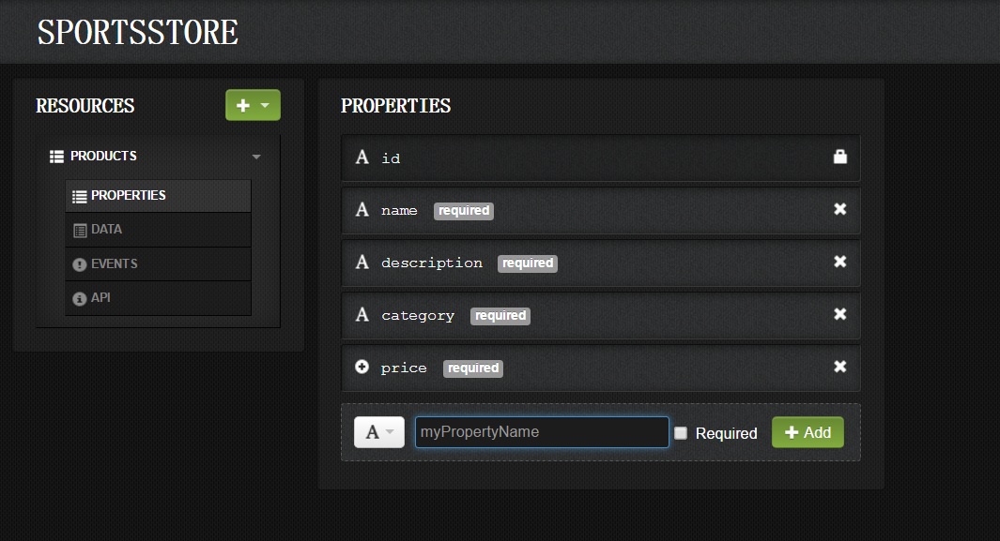
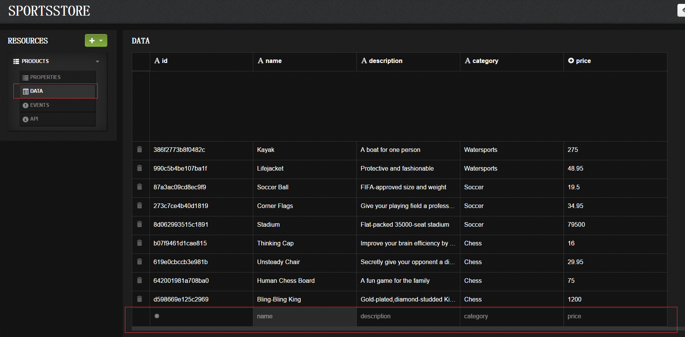
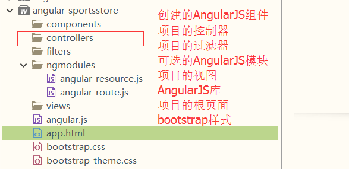
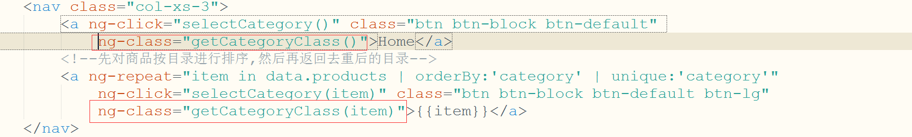

第四章、真正的应用程序：运动商店
本章开始使用AngularJS开发一个真正的应用程序：运动商店，本章完成产品的展示、分页、分类导航功能，数据使用虚拟数据。
开始
准备数据
第一步是创建新的Deployd应用程序，你将需要创建目录来存储被生成的文件，我将目录命名为deployd。
创建Deployd应用程序之前，你需要先安装Deployd和MongoDB
Deployd安装见第一章。
MongoDB安装如下：
- 从官网下载mongoDB.msi，双击安装，添加bin路径到系统环境变量
配置mongo服务
1mongod.exe --bind_ip 127.0.0.1 --logpath "D:\MongoDB\data\dbConf\mongodb.log" --logappend --dbpath "D:\MongoDB\data\db" --port 5500 --serviceName "sportsstore" --serviceDisplayName "sportsstore" --install–logpath 以及 –dbpath 的路径可以自己配置，在运行命令之前先创建这些文件和文件夹
切换到deployd目录，输入一下命令：
启动新的服务器，输入以下命令：
输入命令dashboard，将会打开dashboard资源配置网页。
创建数据结构
新建一个Collection命名为/products,添加如下属性：
当你完成属性的添加，控制面板应该同下图一样。名称 类型 是否必须 name string 是 description string 是 category string 是 price string 是

注意：Deployd增加了id属性，在数据库中这将被用于独一无二的识别对象。deployd会自动将唯一赋给id属性，并且我将依靠这些值在后续章节实现管理功能添加数据
测试数据服务
测试Deployd被正确地配置并工作着，打开浏览器窗口并转到以下URL：1http://localhost:5550/products如果顺利，添加的数据将会以JSON格式返回。
准备应用程序
- 创建目录结构
你可以以你喜欢的任何方法组织构成AngularJS应用程序的文件。以angular-sportsstore为项目根目录，下面是我使用的目录结构：
 构建基本大纲
顶级HTML文件app.html包含结构标签以及引入我将使用的JavaScript库和CSS库，下面是app.html的代码：1234567891011121314151617181920212223242526<html><head><meta charset="UTF-8"><title>SportsStore</title><script src="angular.js" type="text/javascript" charset="utf-8"></script><link rel="stylesheet" type="text/css" href="bootstrap.css"/><link rel="stylesheet" type="text/css" href="bootstrap-theme.css"/><script type="text/javascript">angular.module("sportsStore",[]);</script></head><body><header class="navbar navbar-inverse"><a href="#" class="navbar-brand">SPORTS STORE</a></header><section class="panel panel-default row"><nav class="col-xs-3">Categories go here</nav><div class="col-xs-9">Products go here</div></section></body></html>
显示（伪造的）产品数据
我将开始添加对显示产品数据的支持。我想一次只专注一个功能区域，所以我会定义伪造的初始本地数据。然后在下一章替换成Deployd服务器来的数据。
创建控制器
我要创建的控制器将被用于整个应用程序（类似“顶级控制器”），顶级控制器单独一个文件，命名为controllers/sportsStore.js。下面是代码：
显示产品详情
为了显示产品详情，需要向html文件添加一些HTML标签。AngularJS让显示数据很容易。下面是修改后的app.html文件
显示分类列表
创建分类去重过滤器
分类列表不能重复，这意味着我们要对产品的category属性值进行去重。使用AngularJS的自定义过滤器能很方便实现。
现在我创建一个customFilters模块，该模块包含项目所有自定义的过滤器。下面是filters/customFilters.js文件的代码：1234567891011121314151617181920angular.module("customFilter",[]).filter("unique",function(){return function(data,propertyName){//只对数组每个对象的属性过滤,返回对象属性值的集合if(angular.isArray(data) && angular.isString(propertyName)){var results = [];var keys = {};for(var i = 0 ; i < data.length ; i++){var val = data[i][propertyName];if(angular.isUndefined(keys[val])){keys[val] = true;results.push(val);}}return result;}else{return data;}}})
生成分类导航链接
生成可供用户点击的分类导航链接需要用到上一段创建的unique过滤器，还有一些可用的AngularJS内置功能。下面是app.html文件修改的部分代码：12345678910111213141516...<script type="text/javascript">//依赖customFilter模块angular.module("sportsStore",["customFilter"]);</script><!--引入顶级控制器--><script src="controllers/sportsStore.js" type="text/javascript" charset="utf-8"></script><!--引入自定义过滤器--><script src="filters/customFilters.js" type="text/javascript" charset="utf-8"></script>...<nav class="col-xs-3"><a ng-click="selectCategory()" class="btn btn-block btn-default">Home</a><!--先对商品按目录进行排序,然后再返回去重后的目录--><a ng-repeat="item in data.products | orderBy:'category' | unique:'category'"ng-click="selectCategory(item)" class="btn btn-block btn-default btn-lg">{{item}}</a></nav>选择分类
使用ng-click指令响应元素的点击事件，在本例中，点击导航菜单时触发selectCategory行为，为此，我需要在控制器定义该行为。我不想在顶级sportsStore.js控制器上添加该行为，因为这个控制器是定义应用程序通用行为和数据，作为替代，我会创建新控制器，它仅被用于产品列表和分类视图。下面是controllers/productListController.js文件的内容：123456789101112angular.module("sportsStore").controller("productListCtrl",["$scope","$filter",function($scope,$filter){var selectedCategory = null;$scope.selectCategory = function(newCategory){selectedCategory = newCategory;}//当没有选中产品分类(显示全部)或者产品所在分类被选中时返回true(显示选择的分类)$scope.categoryFilterFn = function(product){return selectedCategory == null || product.category == selectedCategory;}}])在页面中应用控制器,
app.html修改的部分代码如下：123456789101112...<!--引入自定义过滤器--><script src="filters/customFilters.js" type="text/javascript" charset="utf-8"></script><!--引入产品列表控制器--><script src="controllers/productListController.js" type="text/javascript" charset="utf-8"></script>...<!--使用控制器--><section class="panel panel-default row" ng-controller="productListCtrl">...<!--遍历添加商品,filter过滤器只返回结果为true的数据--><div class="well" ng-repeat="item in data.products | filter:categoryFilterFn">...高亮选择的分类
对被选分类按钮使用Bootstrap的btn-primary CSS类以实现高亮显示。下面是修改后的productListController.js文件1234567891011121314151617angular.module("sportsStore")//定义激活添加的类名.constant("productListActiveClass","btn-primary").controller("productListCtrl",["$scope","$filter","productListActiveClass",function($scope,$filter,productListActiveClass){var selectedCategory = null;$scope.selectCategory = function(newCategory){selectedCategory = newCategory;}//当没有选中产品分类(显示全部)或者产品所在分类被选中时返回true(显示选择的分类)$scope.categoryFilterFn = function(product){return selectedCategory == null || product.category == selectedCategory;}//若当前类别被选中,添加样式$scope.getCategoryClass = function(category){return selectedCategory == category ? productListActiveClass : "";}}])下面是
app.html修改的代码：
添加分页
更新控制器
我更新了productListCtrl控制器来支持分页，下面是更新后的controllers/productListController.js文件123456789101112131415161718192021222324252627282930313233angular.module("sportsStore")//定义激活添加的类名.constant("productListActiveClass","btn-primary")//分页大小.constant("productListPageCount",3).controller("productListCtrl",["$scope","$filter","productListActiveClass","productListPageCount",function($scope,$filter,productListActiveClass,productListPageCount){var selectedCategory = null;$scope.selectedPage = 1;$scope.pageSize = productListPageCount;$scope.selectCategory = function(newCategory){selectedCategory = newCategory;//选择新的分类时默认显示第一页$scope.selectedPage = 1;}//当没有选中产品分类(显示全部)或者产品所在分类被选中时返回true(显示选择的分类)$scope.categoryFilterFn = function(product){return selectedCategory == null || product.category == selectedCategory;}//若当前类别被选中,添加样式$scope.getCategoryClass = function(category){return selectedCategory == category ? productListActiveClass : "";}//选择分页$scope.selectPage = function(newPage){$scope.selectedPage = newPage;}//选中页的样式$scope.getPageClass = function(page){return $scope.selectedPage == page ? productListActiveClass : "";}}])实现过滤器
我创建了两个新过滤器支持分页，我将二者添加到customFilter.js文件。下面是修改后的filters/customFilters.js文件的代码：1234567891011121314151617181920212223242526272829303132333435363738394041424344454647angular.module("customFilter",[]).filter("unique",function(){return function(data,propertyName){//只对数组每个对象的属性过滤,返回对象属性值的集合if(angular.isArray(data) && angular.isString(propertyName)){var results = [];var keys = {};for(var i = 0 ; i < data.length ; i++){var val = data[i][propertyName];if(angular.isUndefined(keys[val])){keys[val] = true;results.push(val);}}return results;}else{return data;}}}).filter("range",["$filter",function($filter){return function(data,page,size){if(angular.isArray(data) && angular.isNumber(page) && angular.isNumber(size)){var start_index = ( page - 1 ) * size;if(data.length < start_index){return [];}else{//返回当前页的数据return $filter("limitTo")(data.splice(start_index),size);}}else{return data;}}}]).filter("pageCount",function(){return function(data,size){if(angular.isArray(data)){var result = [];for(var i = 0 ; i < Math.ceil(data.length/size) ; i++){result.push(i);}}else{return data;}}})
3. 更新视图
实现分页的最后一步就是更新视图。下面是修改后的`app.html`页面：
12345678910111213141516171819202122232425262728293031323334353637383940414243444546474849505152535455
<!DOCTYPE html><html ng-app="sportsStore"> <head> <meta charset="UTF-8"> <title>SportsStore</title> <script src="angular.js" type="text/javascript" charset="utf-8"></script> <link rel="stylesheet" type="text/css" href="bootstrap.css"/> <link rel="stylesheet" type="text/css" href="bootstrap-theme.css"/> <script type="text/javascript"> //依赖customFilter模块 angular.module("sportsStore",["customFilter"]); </script> <!--引入顶级控制器--> <script src="controllers/sportsStore.js" type="text/javascript" charset="utf-8"></script> <!--引入自定义过滤器--> <script src="filters/customFilters.js" type="text/javascript" charset="utf-8"></script> <!--引入产品列表控制器--> <script src="controllers/productListController.js" type="text/javascript" charset="utf-8"></script> </head> <!--使用控制器--> <body ng-controller="sportsStoreCtrl"> <header class="navbar navbar-inverse"> <a href="#" class="navbar-brand">运动商店</a> </header> <section class="panel panel-default row" ng-controller="productListCtrl"> <nav class="col-xs-3"> <a ng-click="selectCategory()" class="btn btn-block btn-default" ng-class="getCategoryClass()">Home</a> <!--先对商品按目录进行排序,然后再返回去重后的目录--> <a ng-repeat="item in data.products | orderBy:'category' | unique:'category'" ng-click="selectCategory(item)" class="btn btn-block btn-default btn-lg" ng-class="getCategoryClass(item)">{{item}}</a> </nav> <div class="col-xs-8"> <!--遍历添加商品--> <div class="well" ng-repeat="item in data.products | filter:categoryFilterFn | range:selectedPage:pageSize"> <h3> <strong>{{item.name}}</strong> <!--使用金额过滤器，将数值转换为金额--> <span class="pull-right label label-primary"> {{item.price | currency}} </span> </h3> <span class="lead">{{item.description }}</span> </div> <div class="pull-right btn-group"> <a ng-repeat="page in data.products | filter:categoryFilterFn | pageCount:pageSize" ng-click="selectPage($index + 1)" class="btn btn-default" ng-class="getPageClass($index + 1)"> {{$index + 1}} </a> </div> </div> </section> </body></html>